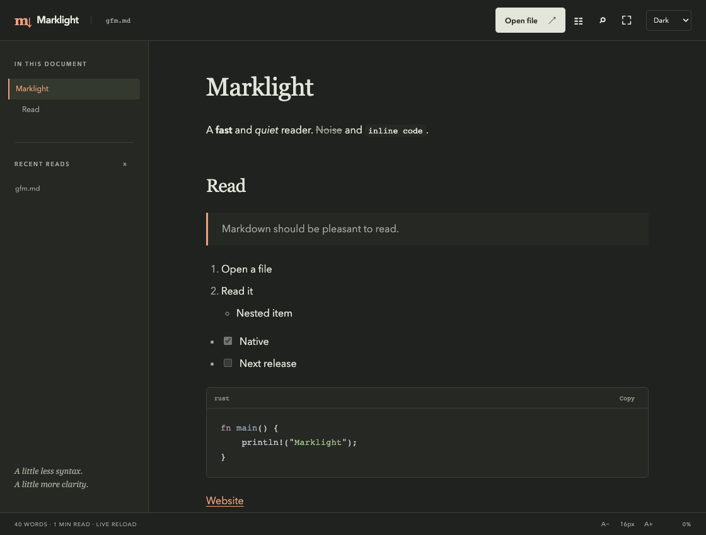

Marklight / Documentation
Find your next page.
Install the reader, open a document, and make yourself comfortable. These commands and behaviors follow the source implementation.
CLI via npm · macOS Apple Silicon
npm install --global marklight
marklight README.md
npx marklight README.mdThe native CLI package has no install scripts or runtime dependencies. The desktop app is a separate download.
01 / Installation
Build the terminal reader.
With Rust stable and Cargo available, install the marklight binary directly from the Git repository:
cargo install --git https://github.com/OthmaneBlial/marklight marklightThen read a Markdown file:
marklight README.mdTo build from a local checkout instead:
git clone https://github.com/OthmaneBlial/marklight.git
cd marklight
cargo install --path crates/marklight-cliThe Rust source install works without Node or Tauri. Crates.io packages are not published for this release; use the source command above.
02 / Desktop build
A window for your Markdown.
The macOS Apple Silicon app is available from GitHub Releases as an app ZIP or DMG. Initial builds are not Developer ID signed or notarized. Linux and Windows packages remain unverified.
The desktop app uses Tauri 2, Rust and a small TypeScript frontend. Install Rust, Node.js and the Tauri prerequisites for your operating system before building.
git clone https://github.com/OthmaneBlial/marklight.git
cd marklight/apps/desktop
npm ci
npm run tauri -- build --features custom-protocol --bundles appThe build command above is for macOS. On Linux/Windows, omit --bundles app and install native build dependencies; those hosts are unverified here. In an existing checkout, start from apps/desktop and run the last two commands. The generated application and bundles are under the workspace’s target/release/ directory. Bundle formats depend on the build host.
For development:
cd apps/desktop
npm ci
npm run tauri -- devAfter installing the desktop app, open it from the CLI:
marklight open README.md
marklight README.md --guiIf the executable is not installed, set MARKLIGHT_DESKTOP to the actual desktop binary. For a local build on macOS or Linux:
MARKLIGHT_DESKTOP="$PWD/target/release/marklight-desktop" marklight open README.mdRun that command from the repository root. Native packages and runtime behavior must be checked on each operating system; building on one host does not validate the others.
03 / Terminal commands
Read where you work.
Use a file path, a directory, or - for standard input. With no path, Marklight uses the current directory. A directory opens the first available file in this order: README.md, README.markdown, index.md.
marklight notes.md
marklight .
git show HEAD:README.md | marklight -
marklight notes.md --width 72 --theme light
marklight README.md --plain --no-pager > readme.txt
marklight --help| Option | Behavior |
|---|---|
--width 20…240 | Set the output width in terminal columns. Otherwise Marklight uses the terminal width, or 80 columns when unavailable. |
--theme system|light|dark | Select the terminal palette. System mode reads the COLORFGBG background hint. |
--plain | Remove ANSI styling. Redirected output is plain automatically, and NO_COLOR also disables styling. |
--no-pager | Print directly, even when the document is taller than the terminal. |
--gui | Launch the desktop reader for a saved file or a directory’s README. |
open PATH | Launch the desktop reader; equivalent to --gui. |
--help / --version | Show usage or the binary version. |
The pager
When standard output is a terminal and the document needs more than one screen, Marklight uses $PAGER, defaulting to less -R. In less, / searches, n moves to the next match and q quits. If the pager cannot start, Marklight prints directly with a warning.
PAGER="less -R" marklight README.mdStandard input is supported in terminal mode. Save piped Markdown to a file before opening it in the desktop reader.
04 / Desktop reading
Open, orient, read.
- Open a file. Use the Open file button, the native File menu, the keyboard shortcut or drag and drop. The desktop window also accepts a file path from the CLI.
- Find your place. Select a heading in the outline or open search. The status bar shows word count, estimated reading time and progress.
- Set the mood. Choose light, dark or system theme, change the font size, hide the outline or enter zen mode.
- Follow the document. Relative Markdown links open another local document. External web and email links open through your system.
- Keep reading after a save. Marklight watches the open file and reloads after changes, preserving the current heading and its offset where possible.
Code blocks include a Copy button. It copies the original code, preserving source line endings and trailing newlines. Document text remains selectable.

05 / Keyboard shortcuts
Less reaching for the mouse.
Mod means ⌘ on macOS or Ctrl on Windows and Linux.
| Shortcut | Action |
|---|---|
| Mod + O | Open a Markdown file |
| Mod + F | Find in the current document |
| Enter / Shift + Enter | Next / previous search match, with the search input focused |
| Mod + Shift + T | Toggle the document outline |
| Mod + Shift + Z | Toggle zen mode |
| Mod + + / − | Increase / decrease the font size |
| Mod + 0 | Reset the font size to 16 px |
| Esc | Close search, leave zen mode, or close the mobile outline |
06 / Markdown dialect
The useful parts, rendered.
The Rust core parses Markdown with pulldown-cmark. Both readers use the same document event stream. Supported content includes:
- Headings, paragraphs, emphasis, strong text and strikethrough.
- Inline code, fenced and indented code blocks.
- Ordered, unordered, nested and task lists.
- Block quotes, thematic breaks, tables and links.
- GFM bare URL and email autolinks.
- Unicode text and unique heading anchors.
The desktop renderer highlights recognized code languages. Unknown code languages stay plain. Local images render in the desktop reader; terminal images appear as text descriptions.
Raw HTML passes through a restricted allowlist. Scripts, event handlers, embedded frames and arbitrary styling from the document are removed. Markdown extensions for executable diagrams, math rendering and editor workflows are outside the reader’s scope.
07 / Links & images
Stay close to your files.
Heading links such as #installation move within the open document. Relative links ending in .md or .markdown open a local Markdown file and can include a heading fragment. Web links use http or https; email links use mailto.
Local raster images must resolve inside the current document’s directory tree. Marklight accepts PNG, JPEG, GIF, WebP, AVIF and BMP references. Image access is checked after canonicalizing the path, so traversal and symlinks cannot escape that tree. Images larger than 16 MiB are not loaded.
Remote images, SVG, file:, data:, javascript: and unsupported link schemes do not load. A missing or blocked image gets an explanatory note in the reader.
[Next page](guide.md#installation)
Relative Markdown navigation can point to another local directory, including ../guide.md. The directory containment rule applies to images.
08 / Preferences
A reading space that remembers.
Desktop preferences are saved in config.toml in the platform’s Marklight application configuration directory. It stores the theme, font size, outline state, zen mode and up to 12 recent file paths. Recent paths are local and can be cleared from the sidebar.
Font size ranges from 12 to 28 px. The defaults are system theme, 16 px type, visible outline and zen mode off.
theme = "system"
font_size = 16
toc = true
zen_mode = false
recent = []Unreadable or invalid preferences produce a warning and the reader uses defaults. CLI theme selection is controlled by --theme, independently of desktop preferences.
09 / Troubleshooting
When a page won’t open.
- “No README found”
- Pass a Markdown file explicitly, or add
README.md,README.markdownorindex.mdto the selected directory. - “Document is not UTF-8”
- Save the source file as UTF-8 and open it again.
- “Document exceeds the 32 MiB safety limit”
- The reader limits file and standard-input loading to 32 MiB. Split the document into smaller files.
- “Desktop app is not installed”
- Install the built app or set
MARKLIGHT_DESKTOPto the desktop executable. Terminal installation alone does not install the desktop app. - Images are unavailable
- Check the relative path and file extension. The image must be a supported raster file within the Markdown file’s own directory tree.
- Live reload warns about watching
- The open document remains readable. Check file permissions and whether your filesystem supports native watch events.
For reproducible problems, open a GitHub issue with your OS, Marklight version and a small Markdown example. Remove private paths and document content before sharing.
Ready for the next page?
Back to Marklight